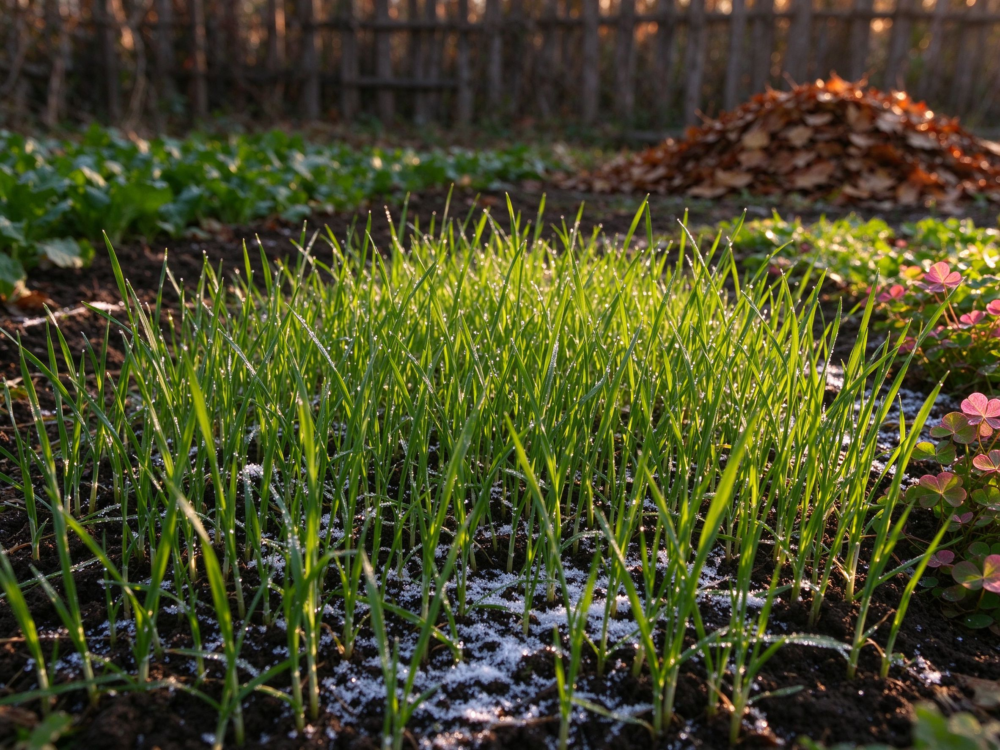

Cover Crops for Small Gardens: The Cheapest Soil Fix You Can Sow in November
The bed you just cleared is the bed that will erode all winter, freeze and thaw into a crust, and sprout a carpet of chickweed by February. Sowing a cover crop costs a few dollars of seed and ten minutes of broadcasting, and pays you back in weeds you never pull, soil you never lose, and organic matter you never had to buy in a bag. It is the least glamorous, most reliable move in the garden.
What a Cover Crop Actually Does
- Smothers winter annual weeds. A dense stand shades the soil surface. Chickweed, henbit and speedwell germinate in light; deny them light and most of your spring weeding disappears.
- Holds your topsoil. Bare winter ground loses its best layer to rain and wind. Roots and residue keep it in place.
- Feeds the soil biology. Living roots exude sugars that feed bacteria and fungi through the off-season — the opposite of a fallow, dead bed.
- Adds organic matter when you kill the crop and let the residue break down in place. This is the slow, free version of buying compost.
- Fixes nitrogen if you choose a legume — clover, vetch, field peas. The nitrogen stays in the residue and becomes available as it decomposes.
- Breaks compaction with deep-rooted species like cereal rye and daikon-type radish.
Which Crop, Which Season
- Cereal rye (winter rye) — the workhorse for late autumn. Germinates in cold soil, grows through winter, produces the most biomass of anything you can sow in November, and its residue mulch suppresses weeds for weeks after you kill it. Sow September through November.
- Crimson clover — sow early autumn (roughly 4–6 weeks before your first frost) so it establishes before cold. Fixes nitrogen, flowers early enough to feed pollinators if you let a little bloom in spring.
- Hairy vetch — the strongest nitrogen fixer and the most winter-hardy legume, but it climbs and can wrap around everything nearby. Best on a bed you'll mow flat, not next to trellises.
- Field peas / winter peas — quick establishment, good nitrogen, killed easily by winter cold in colder zones.
- Oats — the safe choice if you have trouble with rye residue or want something that dies reliably in a hard freeze.
- Buckwheat — a warm-season filler only. Sow after summer crops; it dies at the first frost and is useless as a winter cover.
- Mustard and radish — fast biomass, and mustard has a biofumigant effect against some soil-borne pests. Don't follow mustard with brassica crops in spring.
Sowing Rates for a Backyard Bed
Rates per 100 square feet (roughly a 5×20 ft bed), broadcast by hand and raked in:
- Cereal rye: 1.5–2.5 lb
- Crimson clover: 0.4–0.6 lb (inoculate with the right rhizobium if the packet doesn't say pre-inoculated)
- Hairy vetch: 0.5–0.75 lb, inoculated
- Field peas: 1.5–2 lb
- Oats: 1–1.5 lb
For a mixed stand, use roughly 60% of the grass rate plus 40% of the legume rate — a rye-and-vetch mix gives you biomass and nitrogen together, which is why it's the standard farm cover and works just as well in a raised bed.
How to Sow Without Equipment
- Clear the bed of spent crops and the worst weeds. Don't till — you want the residue on top.
- Rough the surface with a rake so seed has contact with soil, not mulch.
- Broadcast half the seed walking one direction, then the other half walking across it. Hand-broadcasting in two passes is far more even than one.
- Rake lightly, 1–2 cm, or tread the seed in with flat feet. Cover matters more than depth.
- Water once if the soil is dry and rain isn't forecast within a few days. After that, leave it alone.
Killing It in Spring — the Part People Get Wrong
The cover crop becomes a weed problem only if you let it go to seed or let it get woody. Kill it while stems are still flexible and before seed heads form.
- Mow and leave the residue — the simplest method. Cut low, spread the clippings as mulch, plant through it. This is the natural companion to no-till gardening.
- Tarp it — mow, then cover with a light-blocking tarp for two to three weeks. Fast, clean seedbed, but it also kills the soil-surface life underneath for a while.
- Winter-kill — in cold zones, oats, field peas and buckwheat die on their own. Rye and vetch usually survive and need a real kill.
- Crimp or roll — a heavy roller or a board walked over the stand lays stems flat into a mat. Works well on rye at the right stage; frustrating if you're late.
Common Mistakes
- Letting rye head out. One rye plant sets enough seed to become next year's worst weed. Kill it early.
- Sowing too late. Rye is forgiving; clover and vetch are not. If you're within three weeks of hard frost, choose rye or oats.
- Sowing a legume without inoculant. No rhizobium, no nitrogen. Buy pre-inoculated seed or a cheap packet of inoculant.
- Expecting a fertilizer. A cover crop builds soil structure and slow-release nitrogen; it won't fix a soil that needs lime or phosphorus. Test first — see improving garden soil.
- Covering every bed. Leave one bed for garlic, overwintering spinach, or a cold frame. Cover crops and winter crops compete for the same square feet.
What to Do With the Bed in Spring
Mow the stand, spread the residue, and plant straight into it — tomatoes, squash and brassicas all handle a residue mulch fine. For small-seeded crops, pull the residue back into a narrow strip, sow, and close the mulch in once seedlings are up. Either way, the organic matter stays on site instead of going to the curb, and next autumn you'll notice the bed holds water and digs easier than the one you left bare.
Sow it this week. Ten minutes in November buys you a spring with fewer weeds and better soil, and it's the only garden input that gets cheaper every year you do it.